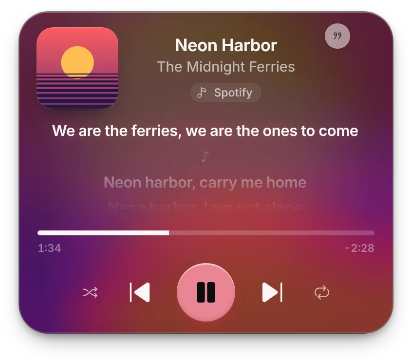
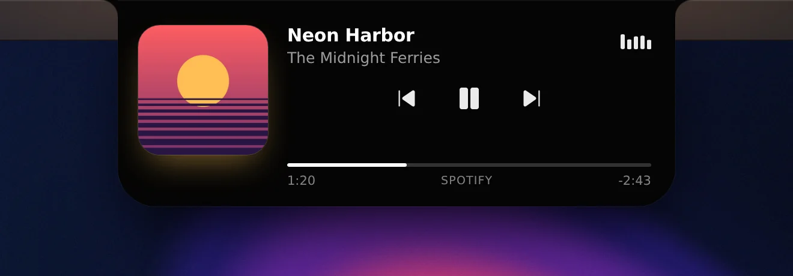
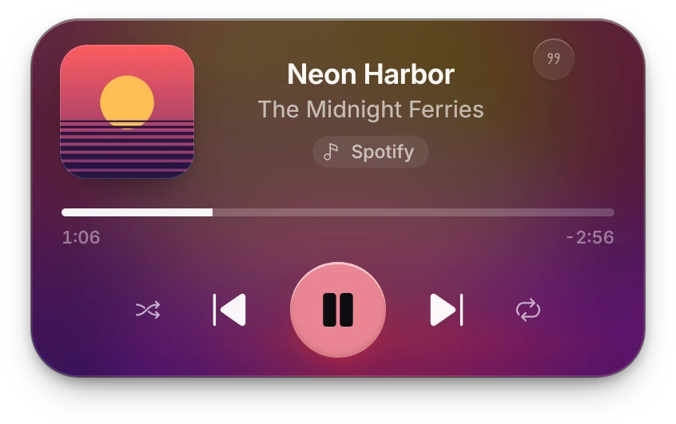
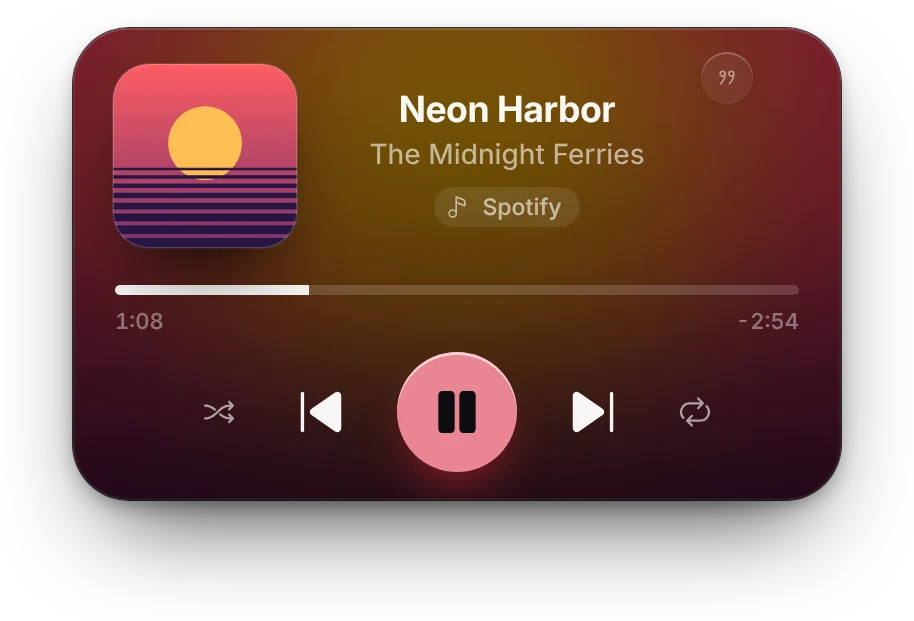
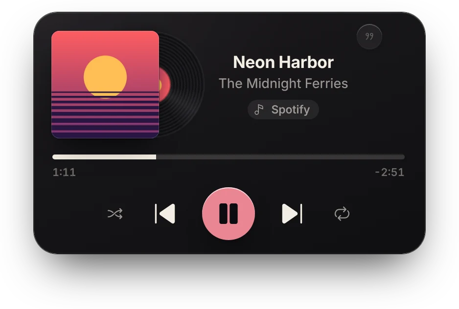
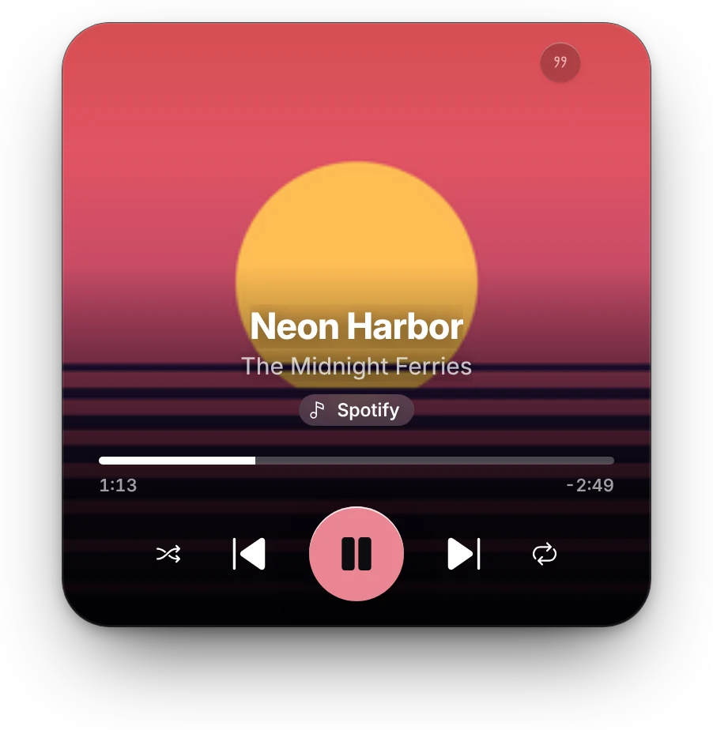
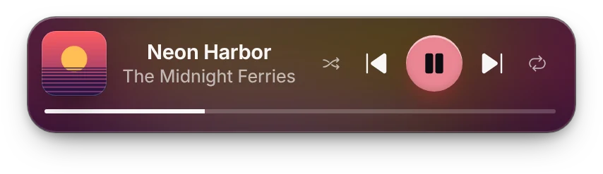
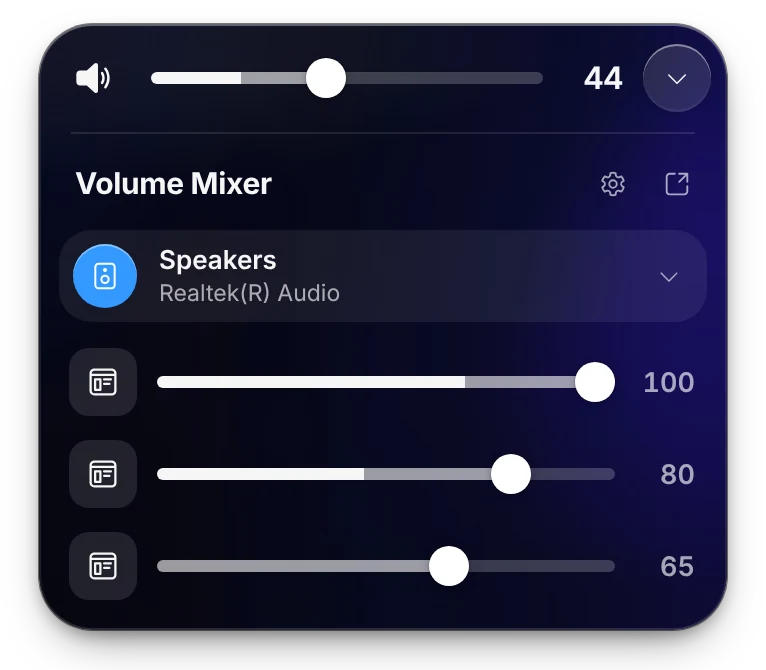
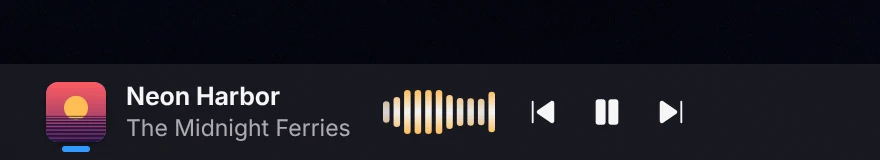
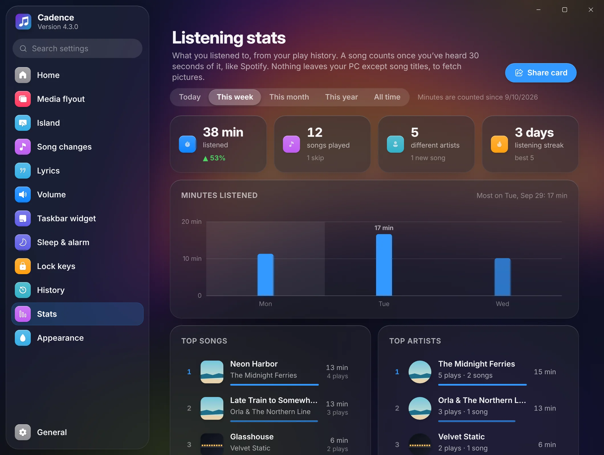

Rest your pointer on the notch
Cadence 4.3 · for Windows 10 and 11
The notchWindowsnever had.
Cadence puts the song that's playing in a notch at the top of your screen. Rest your pointer on it for the controls, or click the cover for the full player with lyrics that keep time.

Works withSpotifyApple MusicYouTube MusicAmazon MusicTIDALDeezerVLCfoobar2000MusicBeeevery browser
The Island
Glance. Touch. Open.
Three depths, all at the top of your screen. You go only as deep as you want to.
What's playing, at the edge.
The notch shows the cover and a meter that moves with the sound. When a new song starts, it widens for a moment with the name.
Rest on it for controls.
The notch unfolds into the nook: the cover, previous, play and next, and how far into the song you are. Move away and it folds back.

Click the cover for everything.
The full player in liquid glass: seek bar, shuffle and repeat, synced lyrics, and a chip that opens the song in its app.

Media flyout
Five ways to see the song.
Every style has the same controls, seek bar and synced lyrics. Tap a line of the lyrics to jump there.





Volume
A volume flyout with a mixer.
Cadence replaces the Windows volume indicator. Open the mixer for every app's own volume, with meters that move with the sound.
- Per-app volume for the browser, the game and the call, each on its own slider.
- Switch outputs between speakers and headphones from the same list, or press Ctrl+Alt+O.
- Scroll to change it over the flyout or the taskbar widget.
Taskbar
A player on your taskbar.
The cover, the song and its controls sit right on the taskbar, flat like everything else there. It works on a taskbar at any edge and hides while nothing plays.

Stats
Your listening, counted.
Minutes listened, top songs and artists with their covers and photos, streaks, and the hours you listen most. Click a song to play it again in the app you heard it in. Your history stays on your PC.

And the rest
Small things, done properly.
Synced lyrics
Lines that follow the song, from the free LRCLIB database. Tap a line to jump to it.
Sleep timer and alarm
Fade out and pause after a while or at the end of the song. Wake up to your music, turned up slowly.
Headphones
A pop-up when headphones connect, with the battery of Bluetooth devices that report it.
Lock keys
Caps Lock and Num Lock tell you when they change, in the same glass.
Quiet hours
Song pop-ups stay away at night, while everything you ask for still works.
Play it again
Songs from your history open in the app you heard them in, as the exact track when it can be found.
Get Cadence 4.3
Free, with no account. For Windows 10 (version 1809 or newer) and Windows 11, 64-bit.
SHA-256 765e846125254576a51ae143d289be6dc657c0423548b8b873d4242eda61ae44
- Run the installer
Open
Cadence-Setup-4.3.0.exefrom your downloads. If your browser says the file isn't commonly downloaded, choose Keep. - If Windows warns you
“Windows protected your PC” appears because the installer isn't code-signed yet. Click More info, then Run anyway.
- Look up
Cadence installs for your account only, with no admin prompt, and starts right away. The notch is at the top of your screen, and the music note by the clock opens Settings.